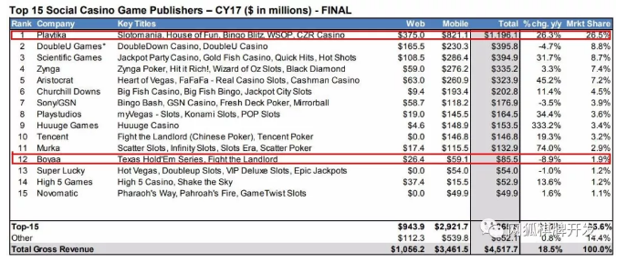
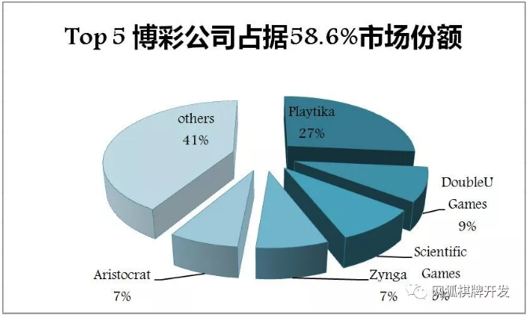
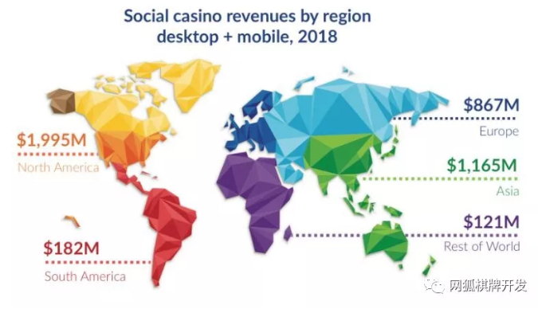
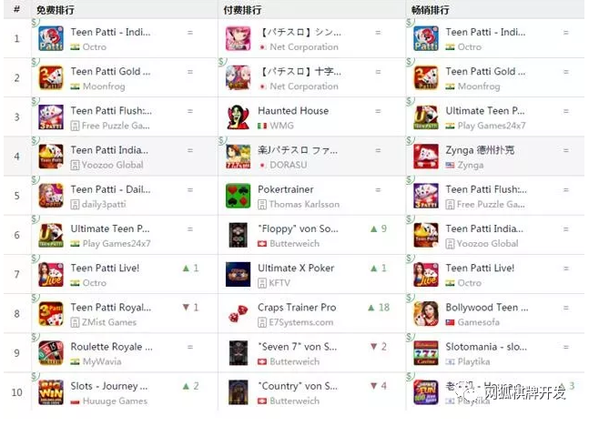
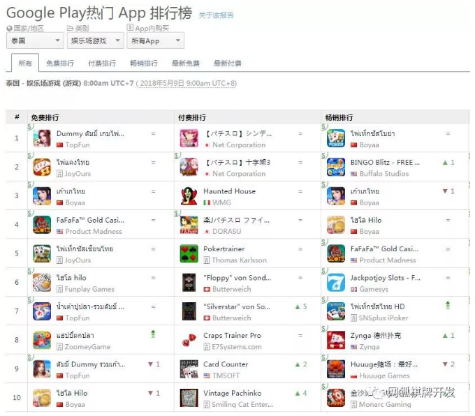
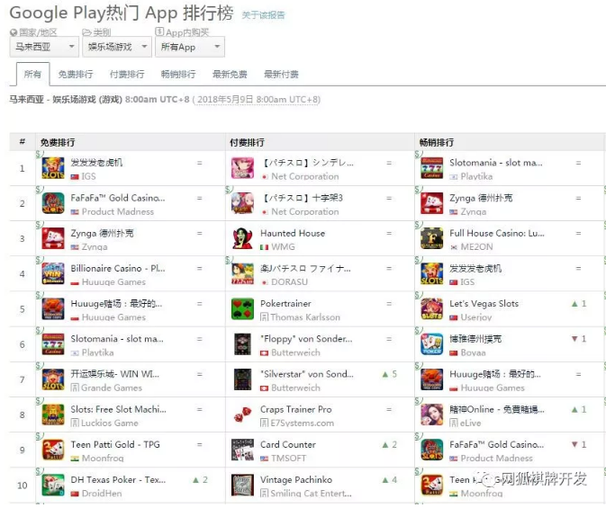
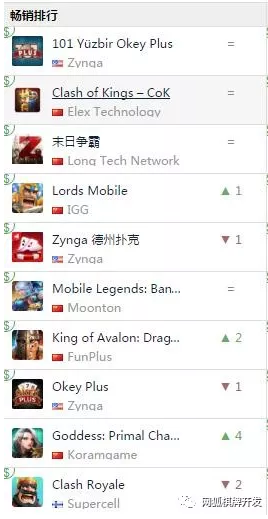

作者：白鲸出海 有删改
国家对棋牌游戏市场环境监管日严，当有人还在惴惴不安，有的人已经把目光转向海外。不过，出海并非易事，对于博彩出海，市场的选择、游戏的优化及运营功力、以及细分受众的触及，都十分重要。
海外的日子怎么样？
根据调研机构 Eilers&Krejcik Gaming 不久前发布的《2017 Q4 社交博彩类游戏追踪报告》，按公司在全球市场份额来计，博雅互动排在第 12 位，是唯二上榜的两家中国公司之一，腾讯排在第 10 名。相较之下，中国市场在其它公司的收入占比要比这两家小得多。

全球 Top 15 社交博彩类游戏发行商 2017 年收入 | 来源：Eilers&Krejcik Gaming
排名前十五的公司，除了 2017 年收购了 IGT 旗下博彩手游工作室 Double Down Interacitve 的 Double U Games，以及 Sony、博雅互动和 Super Lucky，其余 11 家发行商营收都保持正增长，平均增幅 54%。
与博雅互动形成鲜明对比的是巨人网络在 2016 年收购的以色列社交博彩游戏公司 Playtika，并没有进入中国市场，同样是以 2013 至 2017 年作为对照区间，公司业务的复合年增长率达到了 41%，2017年收入同比增长 26.3%。

2017 年 Top 5 博彩公司市场份额 | 白鲸出海根据公开信息整理
但同样应看到的一点是，海外博彩市场虽然整体向好，但是几乎已经成为了巨头的游戏，Top 5 的博彩公司占据了 59% 的市场份额。此外，行业并购非常常见，如 Aristocrat 收购了 Product Madness 和Big Fish Games。
博彩出海去哪里？

2018 年社交博彩游戏市场规模（按区域划分） | 来源：Superdata
根据 Superdata 预测，2018 年全球博彩市场份额，依然北美最大，美国是主要市场，亚洲超过欧洲为第二大市市场。
分析 App Store 美国游戏畅销榜可以发现，Playtika、Double Down Interactive、Big Fish Games、Huuuge Games、Play Studios、Zynga，几乎排名靠前的博彩公司都已经进入美国市场。5 月 9 日，App Store 美国游戏畅销榜 Top 100 中，有 19 款博彩类游戏，占比接近 1/5，偏爱智力和博彩游戏的美国人民最喜欢的是老虎机（Slot）游戏，19 款里有 15 款，扑克游戏仅 2 款。
值得注意的是，美国博彩类游戏的排名变化不大，有变化也只是几家大厂商旗下产品的此起彼伏，国内厂商在北美市场淘金难度较大。目前，狂热网络、趣加、上海沪趣、腾讯，几家已成立多年、具备一定研发实力的公司，旗下产品打入了 App Store 美国赌场类游戏 Top 100，但排名都不高。
为此，许多中小厂商将眼光放在了第二大市场，亚洲。
App Annie 与 Google 在 3 月份共同举办的“带你玩转社交博弈游戏海外市场”活动中，主办方公布的数据显示，“美国、日本和澳大利亚是社交博彩游戏收入前三的国家，也就是说日本是亚洲社交博彩游戏市场规模最大的国家，但日本游戏市场相对封闭，进入不易，目前只有狂热游戏的一款宾果游戏《Bingo Party》在日本娱乐场游戏下载榜单第 13 位。而相较之下，泰国、印度和马来西亚是非常值得关注的新兴市场，尤其是印度，下载量及收入都呈现出两位数的增长。”
1、印度博彩游戏将达 9 亿美元规模，大量中国游戏厂商已经进入

5 月 9 日 Google Play 印度娱乐场游戏类 App 排名 | 来源：App Annie
观察印度的榜单可以发现，印度人民喜爱博彩类游戏且对炸金花情有独钟。三款炸金花两年长期霸屏印度游戏畅销榜，至今热度不减。这种趋势在娱乐场游戏细分榜单体现得更加淋漓尽致。下载 Top 10 里前 8 名全部是炸金花游戏，在印度下了重注成立分公司的游族，旗下炸金花游戏《Teen Patti India》排在第 4 位。畅销榜里也有7款炸金花游戏。除了炸金花之外，目前在印度市场比较多的就是老虎机游戏。Playtika、Huuuge Games 以及中国的一些厂商都开始在印度推出老虎机游戏。
印度市场的现状是，品类大于品质，海外小厂商做的炸金花手游排名也普遍高于其他品类游戏、甚至高于巨头旗下产品，但是海外厂商在炸金花的本土化方面完全不敌印度本土开发商。所以看到 IGG 和涂鸦移动在老虎机游戏上押注，希望踩到下一个热点。
目前，以 Top 100 榜单来看，进入印度博彩游戏市场的中国厂商包括游族、IGG、涂鸦移动、上海卓亨、深圳度摩、Coconut Game 等公司。
总体上，印度有超过 1.2 亿的游戏玩家，每天玩手机游戏超过 30 分钟，业内估计每月下载游戏 5 亿次。据外媒报道，在未来几年内，将有更多的印度人加入银行系统，随着智能手机和数字支付的普及，预计到 2020 年，印度博彩游戏市场规模将达到 9.438 亿美元。
2、“泰国全民皆赌”，中国厂商拥有相对优势

5 月 9 日 Google Play 泰国娱乐场游戏类 App 榜单|来源：App Annie
泰国博彩游戏榜单上，下载 Top 10，中国厂商占据半壁江山，博雅互动 2 款，深圳的中联畅想有 3 款，畅销榜上 3 款国产游戏均来自博雅互动。上述两家公司在市场上较为重叠，都以印尼和泰国作为海外主要市场。
“泰国全民皆赌”是博雅互动在总结泰国成绩时给出的原因。博雅从页游时代，就开始在泰国 Facebook 上经营博彩游戏。国内市场虽然整体向下，但博雅德州扑克在泰国 Facebook 的游戏粉丝已经达到 1492 多万人，泰国整个人口才 6886 万。根据之前媒体的报道，2015 年时，粉丝数为 270 万。
博雅德州扑克（泰国）Facebook主页
博雅也将泰国作为最重要的海外市场之一，在泰国设立了子公司。
2017 年年中时不断有媒体曝出泰国政府有意实行博彩合法化政策带动经济发展。
3、马来西亚博彩游戏市场更多元化

5 月 9 日 Google Play 马来西亚娱乐场游戏类 App 榜单|来源：App Annie
马来西亚的榜单体现了更加多元化的特质，老虎机、德州扑克、甚至印度的炸金花都出现在下载、畅销 Top 10 中，同时也没有哪个国家的游戏厂商占据明显优势。
此外，除了 App Annie 提及的增长较快的三个东南亚新兴市场之外，根据白鲸出海的监测，2017 年在中东游戏收入排名第一的土耳其，游戏畅销总榜 Top 10 中，博彩类游戏一般会占据 3-4 个位置。

5 月 9 日 Google Play 土耳其游戏畅销榜|来源：App Annie
5 月 9 日，在土耳其游戏畅销总榜中，Zynga 的三款博彩游戏跻身前十。此外，据 Prior Date 数据显示，久居土耳其游戏收入 Top 10 的《Zynga 德州扑克》月流水在 2017 年达 330 万美元。
社交博彩游戏的几个趋势
白鲸出海根据一直以来对博彩游戏的关注、以及近期发布的几分行业报告，还总结出以下几个趋势，可供出海厂商可参考。
1、全球博彩游戏下载量增长放缓，收入增幅依旧保持上升态势。也就是说，博彩用户的流量红利可能在未来几年内消失，但是这部分玩家属于特定用户群体，有大量价值可挖掘，包括内购和广告。
在 App Annie 分享会上，数据显示仅 6% 的用户手机中拥有博彩游戏。而在这 6% 的用户中，却普遍呈现出重度化的态势，43% 的用户拥有 5 款以上的博彩游戏。付费快、意愿高，充值高，是博彩游戏玩家的三个特点。留存和转化成为未来博彩游戏持续盈利的关键。对此，Eilers & Krejcik Gaming 指出，博彩游戏本身具有同质化特性，创新固然重要，但对于大多数公司而言，持续优化是关键，运营、预测性分析及机器学习为手段，定期举办活动、补充新的内容可以留住用户。
内购这一盈利点之外，博彩类游戏与激励广告的协同效应十分明显。在今年谷歌 GDC 大会上公布的数据显示，狂热网络发行的《Bingo Party》是谷歌应用商店 Bingo 品类畅销榜的 Top 3 游戏之一，在应用激励视频广告变现之后用户平均停留在游戏的时长提升了 20% ，相应留存率提升了 11%，总体收益（含内购和广告）提升了 40%。
谷歌，也在今年针对博彩游戏开放了白名单，针对社交博彩游戏允许进行推广。白名单的地区为合计占社交博彩类游戏总收入 85% 的 35 个国家。
2、各个国家在博彩游戏上的偏好有强烈的文化根基，选择对的品类很重要。如印度的炸金花、西方一些国家的赛马赛狗游戏、日本的柏青哥、美国的老虎机，在对的品类，第二梯队的营收有时高于小众品类的第一梯队游戏。
3、抓住细分目标受众，有时会出现意外成功。《苏丹的复仇》阿语版在美国游戏畅销榜曾经打入过 Top 30，美国为英语系国家，但在当地依然有相当数量的土豪阿拉伯语用户存在。用户对阿语内容的渴望，导致了这款游戏的成功。在社交博彩市场上，类似的案例有趣加。趣加的扑克游戏之所以能够进入美国这种大体量市场的 Top 100，是因为该款游戏是社交博彩游戏 Top 100 中唯一的一款阿语游戏。纹桃科技致力于棋牌游戏开发14年，拥有大量棋牌游戏开发运营经验和大批成功案例。
想开发一款迅速盈利的棋牌游戏，欢迎咨询热线电话：18711739336


游戏产品
PRODUCTS

售后服务
SERVICE

技术支持
TECHNOLOGY

运营指导
OPERATING